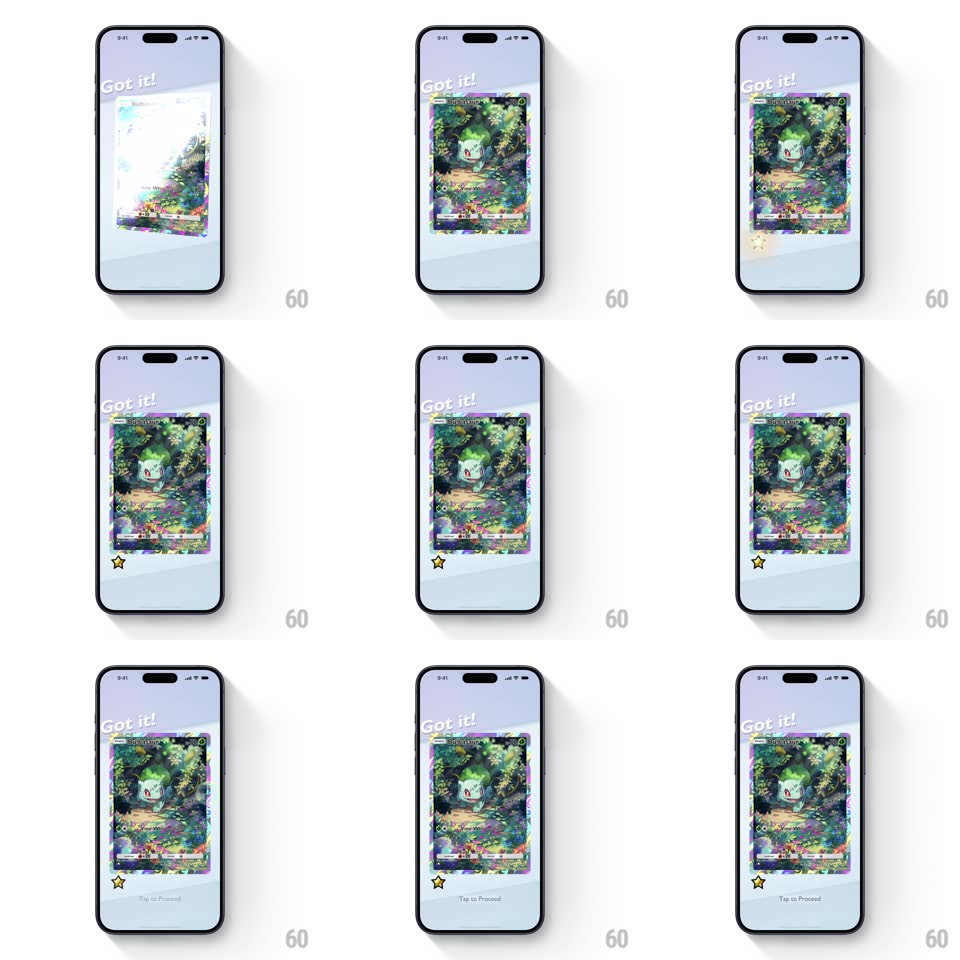

Media
Frame-by-frame

Rebuild this interaction 1:1: Pokemon TCG Pocket's card reveal - under a "Got it!" header, the new card (Bulbasaur full-art) flips in with a shimmering holographic foil sweep while a yellow star icon bounces at its corner and "Tap to Proceed" fades in below.

Rebuild this interaction 1:1: Pokemon TCG Pocket's card reveal - under a "Got it!" header, the new card (Bulbasaur full-art) flips in with a shimmering holographic foil sweep while a yellow star icon bounces at its corner and "Tap to Proceed" fades in below. ## Integration Integration: stack-agnostic spec - springs given as stiffness/damping, timed motions as duration + curve; map every value to your framework and animation library of choice. ## Scene Pale blue-grey screen: "Got it!" in a hand-drawn style at top-left, the revealed card centered (full-art Bulbasaur in a forest scene with a rainbow foil border), a yellow star badge at the card's lower-left corner, and "Tap to Proceed" microcopy at the bottom. ## Motion spec Pattern: foil reveal with badge bounce. - The card flips in from its back (rotateY 180 -> 0, 450ms, ease-in-out) with a slight scale-up at the midpoint (1 -> 1.05 -> 1). - On landing, a holographic shine sweeps the card once diagonally (specular band travels corner to corner, 700ms) and then the foil settles into a slow idle shimmer (subtle hue drift, 3s loop). - The star badge pops in at the corner (scale 0 -> 1.3 -> 1, spring ~500/15, 350ms) and keeps bouncing softly (translateY -3px loop, 1s). - "Got it!" writes on with a slight rotation (-3deg) as the flip starts; "Tap to Proceed" fades in last (opacity 0 -> 1, 300ms, after the shine passes). ## Calibration - One full shine sweep on reveal, then subtle idle shimmer - the reveal is special, the idle is quiet. - The star's bounce is springy and loose - sticker-like. ## Reduced motion Card fades in; star static; no shine sweep. ## Don't miss - The foil border is rainbow-gradient and catches the sweep first - the border announces the rarity. - The header "Got it!" is tilted and informal - celebration tone, not UI chrome.